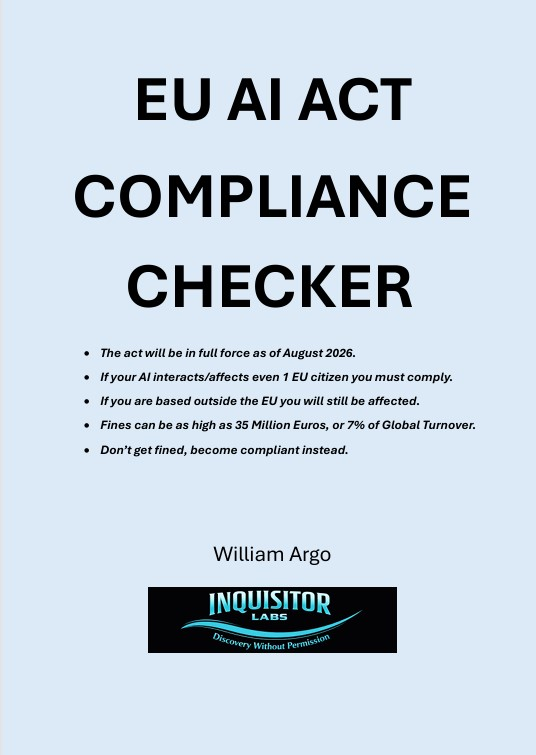
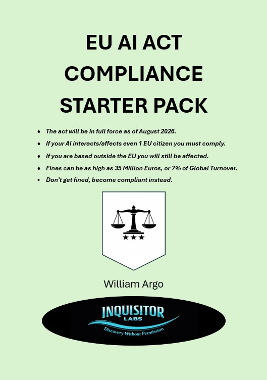

The EU AI Act is the first major regulation that forces organisations to test, evaluate and document AI systems using real‑world conditions. It is no longer acceptable to rely on prompt testing, curated demos or idealised examples. The Act requires evidence — not assumptions.
Any organisation deploying high‑risk AI must now prove:
These requirements cannot be met with traditional testing. They demand workflow‑based evaluation that reflects how AI is actually used by real people, under real pressure, in real environments.
The Act exposes a fundamental industry problem: most AI systems are tested in conditions that do not resemble production. This creates a gap between expected behaviour and actual behaviour — the gap where failures, liabilities and regulatory breaches occur.
Real‑world testing closes that gap. It reveals:
This is the level of evidence regulators expect — and the level organisations must produce to remain compliant.
The LLM INQUISITOR METHODOLOGY provides a practical, repeatable and workflow‑aligned approach to testing AI systems in ways that meet the Act’s expectations. It is designed for real‑world evaluation.
The methodology supports compliance by enabling:
It gives organisations the evidence they need to deploy AI safely, legally and with confidence.
Organisations preparing for compliance can use the following practical resources from Inquisitor Labs:

A structured, question‑driven tool to determine whether the Act applies to your system and what obligations follow.

EU AI Act Compliance Starter Pack
A practical, fast‑start guide covering system categories, documentation requirements, organisational readiness, and real‑world obligations.
This book provides the complete methodology, detailed examples and practical guidance for meeting the Act’s testing, documentation and monitoring requirements.
The EU AI Act is the first major regulation of its kind — but it will not be the last. The UK, US and Canada are already drafting legislation that mirrors its focus on testing, evaluation, documentation and oversight.
Preparing for the EU AI Act prepares you for global compliance.
For deeper, practical guidance on specific parts of the Act, see the following pages:
Each page provides focused, practical guidance designed for developers and organisations preparing for compliance.
Home · Insights · Testing · Research · Training · Open Use · Collaborations · Glossary · Services · EU AI Act
(C) William Argo